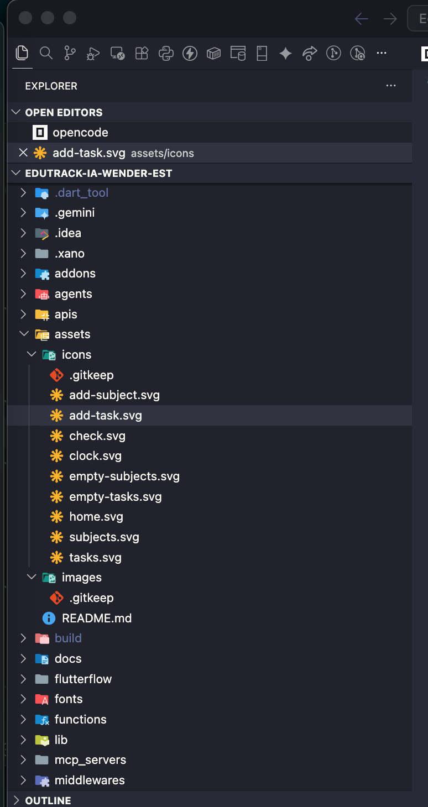
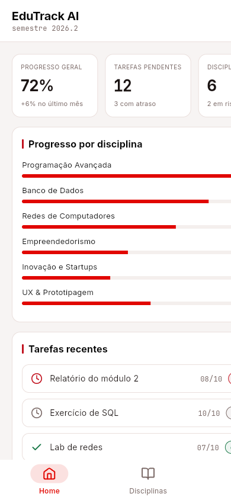
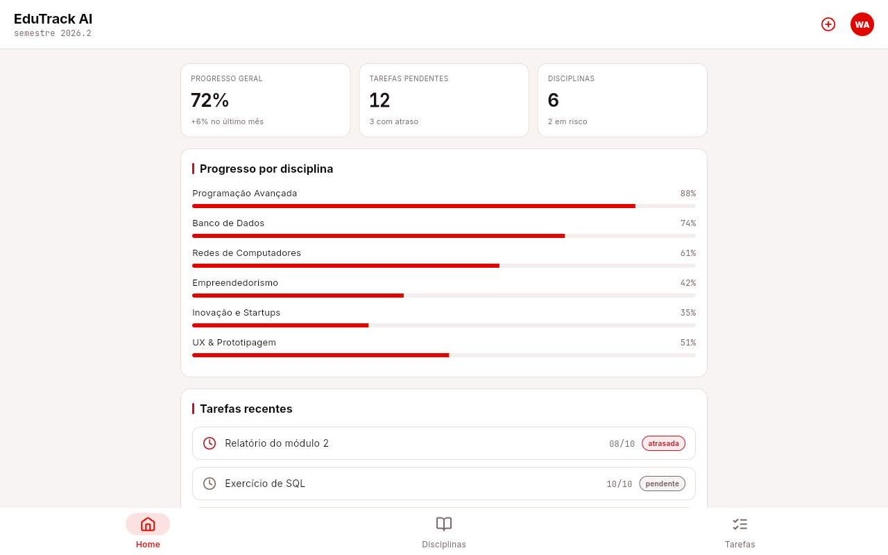
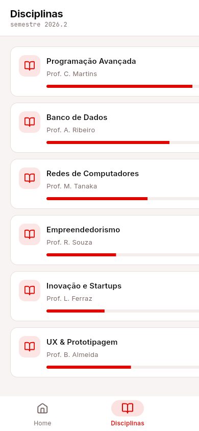
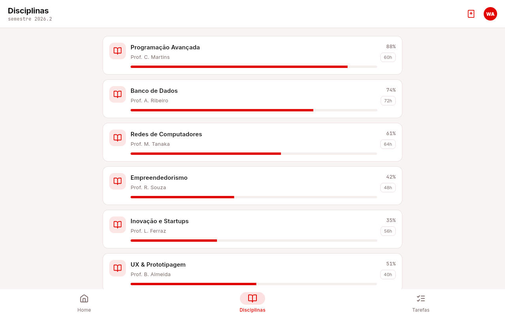
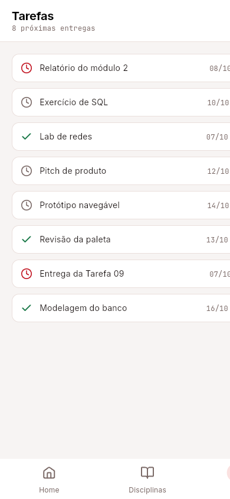
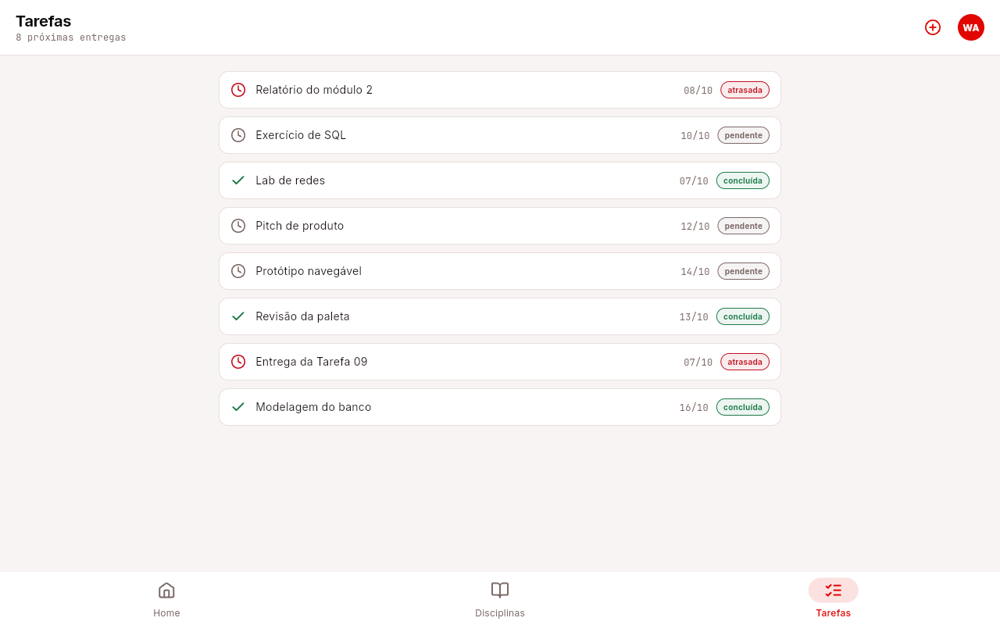

| Disciplina | Innovation Lab: Desenvolvimento Avançado No/Low Code |
| Módulo | 1 – Introdução ao Spec-Driven Development |
| Duração estimada | 2 horas |
| Aluno | Wender Araújo Santos |
| E-mail institucional | wender.araujo@aluno.impacta.edu.br |
| Data de entrega | 6 de outubro de 2026 |
| Branch | feat/flutter-app-local |
| Repositório | github.com/wenderaraujo-creator/EduTrack-IA-Wender-Est |
A Tarefa 09 é a primeira a construir a interface do EduTrack AI. O escopo é a casca: as páginas, a navegação entre elas e os arquivos de asset que o Design System produz. Não há ligação com dados — isso é das tarefas seguintes.
| Item pedido no enunciado | O que foi entregue |
|---|---|
| Ao menos 3 páginas com título visível | HomePage, SubjectsPage e TasksPage — seção 4 |
| Barra de navegação inferior com ao menos 3 itens, navegando para as páginas | Componente NavBar com os itens Home, Disciplinas e Tarefas — seção 5 |
| Assets do Design System, versionados | Nove ícones SVG em assets/icons/ — seção 3 |
| Assets referenciados no projeto | Declarados em pubspec.yaml e usados na NavBar, nos cards e nos estados |
| Pull Request com o histórico de commits | PR #6 (assets) e PR #7 (shell Flutter local) |
| README atualizado | Seção “Tarefa 09” no README do repositório |
O trabalho foi planejado como uma change do OpenSpec, add-figma-assets-and-navigation, com os quatro artifacts exigidos pelo schema spec-driven:
| Artifact | Arquivo | Conteúdo |
|---|---|---|
| proposal | proposal.md | Por quê e o que muda; duas capabilities novas |
| specs | specs/design-assets/spec.md e specs/app-navigation/spec.md | Requisitos dos assets e da navegação |
| design | design.md | Decisões e alternativas descartadas |
| tasks | tasks.md | Roteiro de execução verificado item a item |
Duas capabilities foram declaradas como novas:
O conjunto fecha em 11 requirements e 29 cenários. A change foi validada com openspec validate --strict e arquivada, gerando as specs mestras em openspec/specs/:
openspec validate add-figma-assets-and-navigation --strict → valid openspec archive add-figma-assets-and-navigation --yes openspec validate --specs --strict → 4 passed, 0 failed
Nove ícones SVG foram criados em assets/icons/, todos na grade 24×24 com fill="none", stroke="currentColor" e stroke-width="2". O currentColor é o que permite recolorir o mesmo arquivo entre os dois temas da Tarefa 07, sem duplicar arquivo.
| Arquivo | Uso na interface | Origem no mockup |
|---|---|---|
| icons/home.svg | Item 1 da NavBar — Home | NavBar — item Home |
| icons/subjects.svg | Item 2 da NavBar — Disciplinas | NavBar — item Disciplinas |
| icons/tasks.svg | Item 3 da NavBar — Tarefas | NavBar — item Tarefas |
| icons/add-subject.svg | Botão de adicionar disciplina | Card de disciplina |
| icons/add-task.svg | Botão de adicionar tarefa | Card de tarefa |
| icons/check.svg | Tarefa concluída | Card de tarefa |
| icons/clock.svg | Tarefa pendente ou atrasada | Card de tarefa |
| icons/empty-subjects.svg | Estado vazio da lista de disciplinas | Grupos de funcionalidade — lista vazia |
| icons/empty-tasks.svg | Estado vazio da lista de tarefas | Grupos de funcionalidade — lista vazia |
Um SVG com stroke="#1A1312" escrito dentro ficaria ilegível no tema dark, e o arquivo teria de ser duplicado. Com currentColor, a cor é resolvida pelo tema ativo:
| Tema | Cor do ícone |
|---|---|
| Claro | #1A1312 (text principal) |
| Dark | #F2F3F5 (text principal) |

As três páginas foram construídas em Flutter 3.29.3 local (substituto do FlutterFlow — seção 6), com os mesmos tokens do Design System, os mesmos nove ícones e a mesma nomenclatura da spec app-navigation. O conteúdo é 100% estático (lib/models/seed_data.dart), sem nenhuma chamada ao Xano.
| Página | Conteúdo | Ícone na NavBar | Arquivo |
|---|---|---|---|
| HomePage | Título EduTrack AI + KPIs, painéis de progresso e tarefas recentes | home.svg | lib/pages/home_page.dart |
| SubjectsPage | Título Disciplinas + cards arredondados com nome, professor e carga | subjects.svg | lib/pages/subjects_page.dart |
| TasksPage | Título Tarefas + lista com data e estado | tasks.svg | lib/pages/tasks_page.dart |
Painel de visão geral do aluno: título, indicadores (72% de conclusão, 12 disciplinas, 6 tarefas), painel de progresso e a lista de tarefas recentes.


Lista das disciplinas em Container de bordas arredondadas, cada um com nome, professor e carga horária — o card do mockup da Tarefa 07.


ListView de tarefas com título, data e estado (concluída, pendente ou atrasada), usando os ícones check.svg e clock.svg.


Componente NavBar com três itens, um por página. Cada item tem a ação de navegar para a própria página (o equivalente ao Navigate to Page do FlutterFlow), de modo que nenhum item fica inerte.
| # | Rótulo | Destino | Ícone | Estado ativo |
|---|---|---|---|---|
| 1 | Home | HomePage | home.svg | #E10600 (claro) · #FF1E3C (dark) |
| 2 | Disciplinas | SubjectsPage | subjects.svg | idem |
| 3 | Tarefas | TasksPage | tasks.svg | idem |
O item da página atual é visualmente distinto dos outros dois (NavigationBarTheme em lib/theme/app_theme.dart). Nas Figuras 2 a 4 dá para conferir o item ativo mudando conforme a página — em cada captura, o rótulo da página visível é o que está em vermelho.
Duas ferramentas previstas no roteiro não puderam ser usadas nesta máquina. Em vez de inventar evidência de uso, cada substituição foi registrada na spec da change e nas observações do README.
O enunciado pedia exportar do “arquivo do Figma duplicado na Tarefa 06”, mas esse arquivo nunca existiu e nenhuma máquina disponível roda o editor. A spec design-assets foi revisada: todo asset agora provém do Design System da Tarefa 07, materializado no mockup editável flutterflow/tema-referencia.html, que passou a ser a fonte de design. Apresentar os ícones como “exportação do Figma” seria falso.
O FlutterFlow não carrega nesta máquina: o MacBook Pro 2016 (Intel Core m-5Y31 a 0,90 GHz) não roda o IDE, e o Chrome 154 reporta WebGL: Disabled por causa da GPU de 2015 em blocklist. Para não travar a entrega no roteiro do Windows, as três páginas e a NavBar foram escritas em Flutter 3.29.3 (lib/, pubspec.yaml), reaproveitando os mesmos tokens, os mesmos nove ícones e a mesma nomenclatura da spec.
| Item | Arquivo (Flutter local) |
|---|---|
| Projeto / dependências | pubspec.yaml |
| Tema (tokens da Tarefa 07) | lib/theme/app_theme.dart |
| Páginas | lib/pages/{home,subjects,tasks}_page.dart |
| NavBar inferior | lib/widgets/app_nav_bar.dart | + lib/pages/main_shell.dart
| Conteúdo estático | lib/models/seed_data.dart |
| Teste de widget | test/widget_test.dart |
As capturas foram feitas com flutter build web seguido de Chrome headless usando SwiftShader (renderização por software), porque a GPU de 2015 está em blocklist do Chrome. A navegação entre páginas usa um parâmetro de URL (?page=home|subjects|tasks).
| Arquivo | Largura | Página |
|---|---|---|
| flutterflow-home-phone.png | 390×844 | HomePage |
| flutterflow-home-browser.png | 1280×800 | HomePage |
| flutterflow-subjects-phone.png | 390×844 | SubjectsPage |
| flutterflow-subjects-browser.png | 1280×800 | SubjectsPage |
| flutterflow-tasks-phone.png | 390×844 | TasksPage |
| flutterflow-tasks-browser.png | 1280×800 | TasksPage |
| assets-screenshot.png | — | Pasta assets/ no VS Code (Figura 1) |
flutter build web cd build/web && python3 -m http.server 8080 ./tools/capture-screenshots.sh # Chrome headless + SwiftShader
As seis capturas estão versionadas em docs/evidencias/tarefa09/ do repositório, junto do roteiro de reprodução.
| Critério | Status |
|---|---|
| Pelo menos 3 páginas criadas com título visível | ✓ HomePage, SubjectsPage, TasksPage (Figuras 2–4) |
| Barra de navegação inferior com ao menos 3 itens navegando | ✓ NavBar + MainShell; item ativo em #E10600/#FF1E3C |
| Assets do Design System, versionados | ✓ nove SVGs em assets/icons/ (Figura 1) |
| Assets referenciados no projeto | ✓ declarados em pubspec.yaml e usados na UI |
| Pull Request aberto com o histórico de commits | ✓ PR #6 e PR #7 |
| README atualizado com o progresso | ✓ seção “Tarefa 09” |
| Tema | Detalhe |
|---|---|
| Nenhum dado vem da API | As três páginas exibem conteúdo estático. Os endpoints de subjects e user ainda não existem; ligar as telas a eles agora produziria erro de runtime. |
| Estado vazio previsto | A spec exige empty-state explícito. A lista vazia renderiza um placeholder, e não nada — para isso existem empty-subjects.svg e empty-tasks.svg. |
| Ordem de entrega | Os assets foram versionados na branch style/assets-figma (PR #6) e a casca Flutter local em feat/flutter-app-local (PR #7). |
| Tema claro e dark | O mesmo ícone serve aos dois temas via currentColor; o neon #FF1E3C fica limitado a acentos e ao item ativo (5–10% da tela). |
| Sem binding, por spec | “Nenhuma página chama a API Group Xano Backend” é requirement da change, não apenas estado atual. |
Concluir a Tarefa 09 abrindo o Pull Request da branch feat/flutter-app-local e arquivando a change. Em seguida, a Tarefa 10 — preparação do “cérebro” da IA assistente para o desenvolvimento.